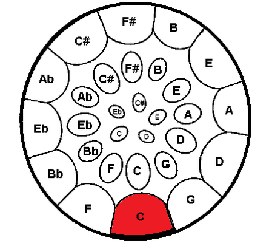
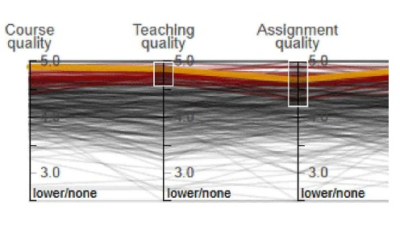
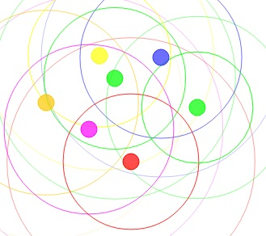

|

|
Steel Drum Visualizer (2013)
I am always looking for ways to use my technical skills in a music-related way. For my master's program in Computer Science at Stanford, I took a two-quarter sequence on symbolic music representation. During my second quarter in this sequence, I built a visualizer for my steel drum ensemble. The visualizer parses user-supplied MIDI files of four-part arrangements. It then plays these arrangements back, supplementing audio with a display that highlights the correct notes on each type of steel drum in time with the music. Check it out here!
|
|

|
Course Evaluation Data Visualizer (2012)
For our final project in a class on data visualization, my partner, Sophia Westwood,
and I built a site that visualizes Stanford course evaluation data. Unfortunately, you
need a Stanford ID to see it. However, you can
see our paper here.
|
|

|
Pulses (2012)
The little program on the front page of this site, called 'Pulses', was originally
a project written in Java and
ChucK for a Music, Science,
and Technology class. The version
made for this site was written entirely in JavaScript, though the sounds were still
generated in ChucK. It uses JSGL
(JavaScript Graphics Library) and a
k-d tree JavaScript library.
It relies on HTML 5 for the <audio> tag, which plays the sounds.
|

|
Libev HTTP Client (2012)
As part of my work at MoPub, Inc., I developed
an HTTP client in C++ based on the
libev event library.
Check it out in GitHub here.
|